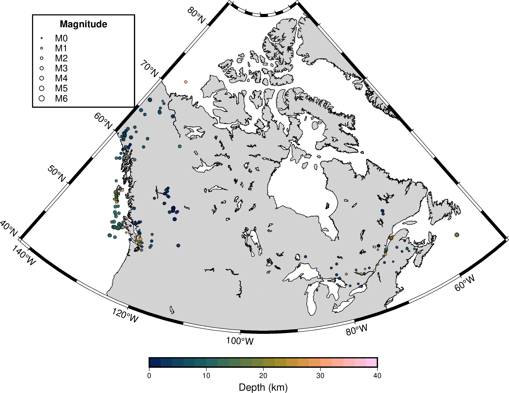

About this dashboard
This website provides access to earthquake data from the Earthquakes Canada database, allowing users to download earthquake records without the limitations of the standard search interface.
The map below shows earthquakes recorded during the last 30 days in the most recent hourly dataset. Symbol size scales with magnitude and symbol colour represents earthquake depth.
Three downloadable datasets are provided:
Recent dataset: earthquakes from the latest rolling recent window used to build the map as CSV. This dataset is updated hourly.
Download recent dataset CSV
Full dataset: the complete downloadable archive from 1985 to present as either CSV or GZ. This dataset is updated daily.
Download full dataset compressed GZ (1985 to present)
Download full dataset CSV (1985 to present)
Created and maintained by Alexander Peace, McMaster University. peacea2@mcmaster.ca
Data source:
Earthquakes Canada (Natural Resources Canada)
.
Map generated using
GMT (Generic Mapping Tools)
.
Depth colours use the
Scientific Colour Maps by Fabio Crameri
.
The recent dataset and map are refreshed hourly. The complete historical dataset is refreshed daily.
